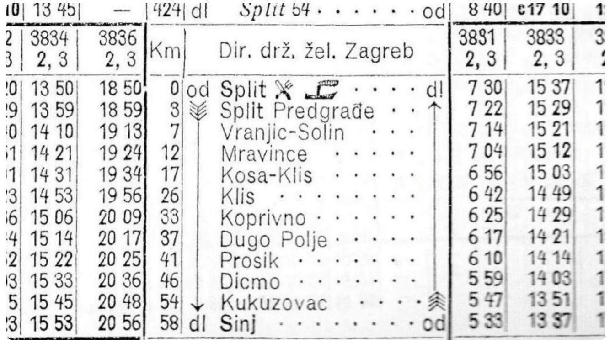

Tehničke karakteristike
vozila, tračnica, reljefa trase pruge, rasporeda i još ponešto...
Sinjska Rera - Uskotračna željeznička pruga 20. stoljeća
Kako je sve počelo i završilo, uz brojne druge detalje...
Zapisi, spisi i fotografije s Rere i njene trase.